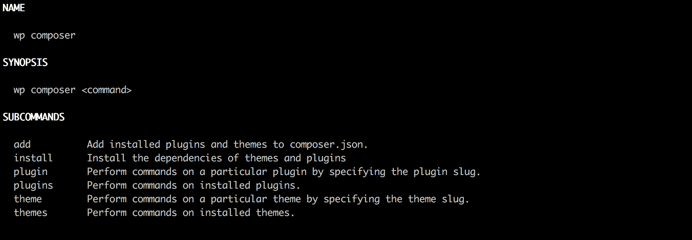

WP Composer
WP Composer is a WP-CLI package for managing your WordPress theme and plugin dependencies. By using the power of WP-CLI and composer, you can declare the themes and plugins your WordPress site depends on.
How it works
Your themes and plugins will be stored in a composer.json file along, the same way you would manage other PHP dependencies.
Installation
Installing as a WP-CLI package (preferred installation method)
wp package install rxnlabs/wp-composer-dependenciesInstalling as a plugin
Clone this repo into plugins/ folder of your WordPress site, run:
composer install --no-devThis installs the plugin dependencies. Then, activate the plugin.
Requirements
Requires WP-CLI version 0.24.0 and up.
After installing as a WP-CLI package or as a plugin, run wp composer --help to see the list of commands and subcommands available.

Commands
| Command | Description |
|---|---|
composer plugins |
Manage dependencies of installed pluginsss |
composer themes |
Manage dependencies of installed themes |
composer plugin |
Manage dependencies of a specific plugin |
composer theme |
Manage dependencies of a specific theme |
composer add |
Add installed plugins and themes to composer.json |
composer install |
Install the dependencies of third-party themes and plugins |